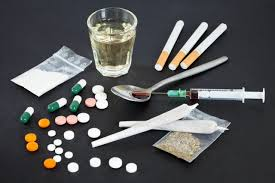

Rusmidler

Rusmidler er ulike substanser som kan påvirke sanseopplevelsene, stemningsleiet og utløse følelse av rus. Rus kan beskrives som en tilstand av eufori og velvære. De kjemiske stoffene vi kaller rusmidler har til felles at de påvirker hjernens belønningssystem, noe som gjør bruken tiltrekkende og utvikler et ønske om å gjenta inntak av rusmidlet. Det er også typisk for rusen at den utløser atferd preget av impulsivitet, kortsiktig tenkning og redusert evne til å legge vekt på negative konsekvenser i beslutningsprosesser. I tillegg til disse sentrale trekkene kan rusen ha dempende eller stimulerende eller hallusinogene effekter. Hallusinogene effekter vil si at sanseopplevelsene blir endret.
Det finnes flere tusen forskjellige rusmidler. Særlig siden 2010 har det kommet til svært mange «nye psykoaktive stoffer». Det europeiske overvåkningsorganet for narkotika (EMCDDA) følger med på mer enn 800 ulike rusmidler. Rusmidlene kan ha svært ulik kjemisk struktur, virkning og inntaksmåte